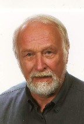

|
|
|
 I studied philosophy because I wanted to know ´what basically keeps the world working´. For earning a living however, I studied business administrations. Profound practical knowledge I got by first job at an auditor-company. Actually all times I was busy at data processing at its phase of most extreme developments, starting with punched cards via main-frames up to PCs and world wide web. I was system engineer, business consultant and high-school professor for computer sciences.As a hobby, I wanted to apply my knowledge and techniques for systematic problem-analyses and solution-development at the most hard question ´how chaos, coincidence, probability are working and could be controlled´. Finally I found an answer: certain pattern exist also within apparent chaos, there is no ´blind nor bad coincidence´, but the ´fate´ points the way to future development. Those who are able to understand come along rather good - within that fictive mathematic-formal world - and correspondingly within real life. That insight changed my view of world from pure materialism to spiritual understanding. By ´pure chance´ my interests changed to the subject of water and I wrote a comprehensive Fluid-Technology - and some of the ideas got approved already. Also by chance I got aware of phenomena of mechanical rotor- and gravity-systems. I analysed crop-circle pictures and the ´Bessler-Wheel´, also by techniques of Remote Viewing. My proposals were not really suitable - like unfortunately usual for inventions of Perpetuum Mobile up to now. Programmers know well their logic ability: slow, strenuous and often faulty. Above this, at first one needs a good idea for a good solution of problems. One can not force the brain to produce such ideas. However if you are focussed, without any effort they fall like a flash into your brain - as a gift from the spiritual background. However also the physical appearances must be based at a background unknown up to now. Both could be really manifested by a joint medium: All existing by One. That age-old wisdom must not be interpreted only by esoteric sense. Well, at the one hand everything is bound to anything quite real by a ´material´ substance. At the other hand, the most differing physical properties and processes are grounded at a unique base. Fortunately I had the opportunity for many discussions, especially with three high qualified friends. Some weeks after each colleague died, a flow of new ideas was pushed into my head. Only by the aid of such ´friends of the other side´ I was able to publish so much revolutionary ideas. My old and voluminous website www.evert.de practically is a record of these developments. Now here, that version is some reduced to the essential parts. Responsible for this website is: Prof. (em) Alfred Evert, Wilhelm-Kopf-Strasse 40, D 71672 Marbach Contacts please only via: fred at evert dot de |
| Home |